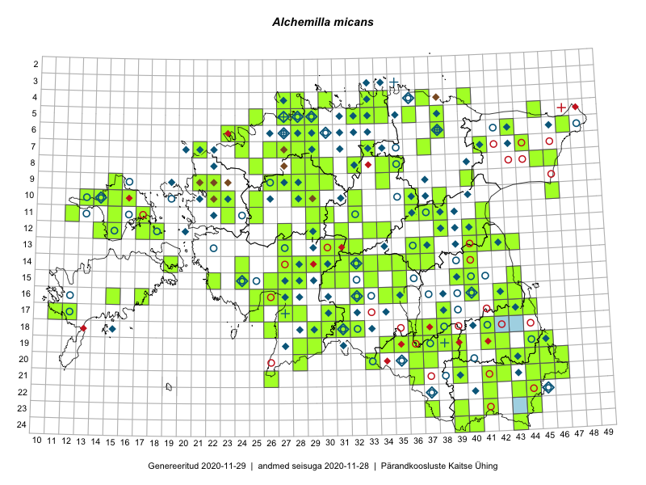

Alchemilla micans — küüt-kortsleht
Kaardile koondatud taksonid: Alchemilla micans Buser (219); Alchemilla gracilis Opiz (1)

Kaart põhineb 220 kirjel, neist:
vaatlusi 0
eksemplare 220
Kaasaegsed1 leiukohad asuvad 147 ruudus.
Andmed “Eesti taimede levikuatlasest”,2 sulgudes ruutude arv:3
● 1971–2005 (82)
○ 1921–1970 (52)
△ kuni 1920 (1)
+ hävinud (0)
? kaheldav (0)
Lisaruudud teistest andmebaasidest:4
ELF: 2006– . . . (3)
PKÜ: 2006– . . . (0)
ELF: 1971–2005 (1)
PKÜ: 1997–2005 (7)
| Ruut | Vaatleja(d) | Vaatlusaeg | Kirje PlutoFis |
|---|---|---|---|
| 07-41 | Peedu Saar, S. Laherand | 2015-06-01 | TAA0135173: Alchemilla micans Buser |
| 07-41 | Peedu Saar, S. Laherand | 2015-06-01 | TAA0135170: Alchemilla micans Buser |
| 17-27 | Peedu Saar, Liina Oja | 2015-06-09 | TAA0135164: Alchemilla micans Buser |
| 17-38 | Peedu Saar, Thea Kull | 2015-06-17 | TAA0135161: Alchemilla micans Buser |
| 06-28 | Olev Abner | 2014-09-11 | TALL C009274: Alchemilla micans Buser |
| 05-29 | Olev Abner | 2014-07-21 | TALL C009302: Alchemilla gracilis Opiz |
| 18-36 | Peedu Saar, Mari Metsoja | 2016-07-20 | TAA0132958: Alchemilla micans Buser |
| 20-42 | Peedu Saar, Tarmo Niitla | 2016-06-16 | TAA0132966: Alchemilla micans Buser |
| 19-28 | Peedu Saar, Ott Luuk | 2016-06-09 | TAA0132971: Alchemilla micans Buser |
| 15-43 | Peedu Saar, Thea Kull | 2016-05-10 | TAA0132975: Alchemilla micans Buser |
| 05-45 | Toomas Kukk, Tiit Hallikma | 2015-07-21 | TAA0134285: Alchemilla micans Buser |
| 05-45 | Toomas Kukk, Tiit Hallikma | 2015-07-21 | TAA0134286: Alchemilla micans Buser |
| 10-29 | Toomas Kukk, Tiit Hallikma | 2015-06-11 | TAA0134978: Alchemilla micans Buser |
| 09-26 | Thea Kull | 2014-06-11 | TAA0113877: Alchemilla micans Buser |
| 09-26 | Thea Kull | 2014-06-11 | TAA0113878: Alchemilla micans Buser |
| 07-44 | Timo Luhamäe, Eerik Leibak | 2015-05-30 | TAA0136482: Alchemilla micans Buser |
| 19-45 | Meeli Mesipuu, Thea Kull | 2015-08-19 | TAA0136483: Alchemilla micans Buser |
| 19-44 | Meeli Mesipuu, Thea Kull | 2015-08-12 | TAA0136484: Alchemilla micans Buser |
| 07-27 | Meeli Mesipuu, Thea Kull | 2016-06-03 | TAA0136486: Alchemilla micans Buser |
| 07-29 | Meeli Mesipuu | 2016-06-02 | TAA0136487: Alchemilla micans Buser |
| 19-39 | Tarmo Niitla, Peedu Saar | 2016-06-13 | TAA0136424: Alchemilla micans Buser |
| 06-47 | Eerik Leibak, Timo Luhamäe | 2015-06-01 | TAA0136488: Alchemilla micans Buser |
| 20-44 | Tarmo Niitla, Peedu Saar | 2016-06-15 | TAA0136445: Alchemilla micans Buser |
| 12-41 | Tarmo Niitla, Eeva-Maria Jeletsky | 2016-06-04 | TAA0136590: Alchemilla micans Buser |
| 11-41 | Tarmo Niitla, Eeva-Maria Jeletsky | 2016-06-05 | TAA0136592: Alchemilla micans Buser |
| 11-38 | Tarmo Niitla, Eeva-Maria Jeletsky | 2016-06-09 | TAA0136599: Alchemilla micans Buser |
| 11-37 | Tarmo Niitla, Eeva-Maria Jeletsky | 2016-06-09 | TAA0136602: Alchemilla micans Buser |
| 12-38 | Tarmo Niitla, Eeva-Maria Jeletsky | 2016-06-10 | TAA0136605: Alchemilla micans Buser |
| 12-40 | Tarmo Niitla, Eeva-Maria Jeletsky | 2016-06-26 | TAA0136611: Alchemilla micans Buser |
| 09-15 | Tarmo Niitla, Eeva-Maria Jeletsky | 2016-07-13 | TAA0136614: Alchemilla micans Buser |
| 10-25 | Meeli Mesipuu, Sirje Azarov | 2016-07-06 | TAA0136498: Alchemilla micans Buser |
| 07-21 | Meeli Mesipuu | 2016-07-07 | TAA0136499: Alchemilla micans Buser |
| 12-15 | Toomas Kukk, Meeli Mesipuu | 2016-08-10 | TAA0137088: Alchemilla micans Buser |
| 11-15 | Toomas Kukk | 2012-07-01 | TAA0112496: Alchemilla micans Buser |
| 11-15 | Toomas Kukk | 2012-07-01 | TAA0112497: Alchemilla micans Buser |
| 18-29 | Toomas Kukk, Tiit Hallikma | 2016-06-04 | TAA0137258: Alchemilla micans Buser |
| 18-29 | Toomas Kukk, Tiit Hallikma | 2016-06-04 | TAA0137259: Alchemilla micans Buser |
| 05-28 | Toomas Kukk, Peedu Saar | 2016-06-01 | TAA0137276: Alchemilla micans Buser |
| 05-28 | Toomas Kukk, Peedu Saar | 2016-06-01 | TAA0137278: Alchemilla micans Buser |
| 10-22 | Oliver Parrest, Sirje Azarov | 2016-07-07 | TAA0137597: Alchemilla micans Buser |
| 21-26 | Indrek Tammekänd, Sirje Azarov | 2016-07-18 | TAA0137605: Alchemilla micans Buser |
| 15-22 | Vilma Kuusk, Indrek Tammekänd | 2015-06-30 | TAA0136029: Alchemilla micans Buser |
| 24-39 | Maret Gerz, Liina Oja | 2016-06-14 | TAA0133746: Alchemilla micans Buser |
| 24-39 | Maret Gerz, Liina Oja | 2016-06-14 | TAA0133747: Alchemilla micans Buser |
| 19-37 | Maret Gerz, Liina Oja | 2016-06-16 | TAA0133767: Alchemilla micans Buser |
| 12-27 | Jaak-Albert Metsoja | 2016-07-05 | TAA0134077: Alchemilla micans Buser |
| 09-22 | Jaak-Albert Metsoja | 2016-07-06 | TAA0134075: Alchemilla micans Buser |
| 11-12 | Eeva-Maria Jeletsky, Tarmo Niitla | 2015-06-27 | TAA0119208: Alchemilla micans Buser |
| 22-41 | Toomas Kukk, Tiit Hallikma | 2016-06-16 | TAA0138059: Alchemilla micans Buser |
| 12-38 | Illi Tarmu, Ülle Jõgar, Kai Rünk | 2015-07-23 | TAA0118873: Alchemilla micans Buser |
| 06-28 | Tõnu Ploompuu | 2015-06-06 | TAA0118971: Alchemilla micans Buser |
| 06-28 | Tõnu Ploompuu | 2015-06-06 | TAA0118972: Alchemilla micans Buser |
| 08-25 | Tõnu Ploompuu | 2015-08-17 | TAA0118997: Alchemilla micans Buser |
| 21-44 | Toomas Kukk, Tiit Hallikma, Johannes Kõdar | 2016-06-14 | TAA0138100: Alchemilla micans Buser |
| 21-44 | Toomas Kukk, Tiit Hallikma, Johannes Kõdar | 2016-06-14 | TAA0138101: Alchemilla micans Buser |
| 24-40 | Ott Luuk | 2016-06-14 | TAA0138972: Alchemilla micans Buser |
| 19-41 | Ott Luuk | 2016-06-13 | TAA0138974: Alchemilla micans Buser |
| 20-28 | Ott Luuk | 2016-06-09 | TAA0138988: Alchemilla micans Buser |
| 18-32 | Toomas Kukk, Hannes Pehlak | 2016-07-19 | TAA0139461: Alchemilla micans Buser |
| 15-33 | Maria Abakumova | 2015-07-23 | TAA0119494: Alchemilla micans Buser |
| 18-32 | Helle Mäemets | 2015-05-25 | TAA0119917: Alchemilla micans Buser |
| 16-32 | Maria Abakumova | 2015-06-17 | TAA0119936: Alchemilla micans Buser |
| 13-32 | Thea Kull, Susanna Vain | 2016-07-21 | TAA0139435: Alchemilla micans Buser |
| 06-24 | Thea Kull, Helle Mäemets | 2016-07-07 | TAA0139437: Alchemilla micans Buser |
| 14-24 | Thea Kull | 2016-06-21 | TAA0139671: Alchemilla micans Buser |
| 07-28 | Thea Kull, Meeli Mesipuu | 2016-06-02 | TAA0139680: Alchemilla micans Buser |
| 09-29 | Thea Kull, Ott Luuk | 2016-05-30 | TAA0139681: Alchemilla micans Buser |
| 10-29 | Toomas Kukk | 2014-06-10 | TAA0112953: Alchemilla micans Buser |
| 10-29 | Toomas Kukk | 2014-06-10 | TAA0112954: Alchemilla micans Buser |
| 08-45 | Tiit Hallikma, Toomas Kukk | 2015-06-01 | TAA0113530: Alchemilla micans Buser |
| 06-43 | Tiit Hallikma, Toomas Kukk | 2015-05-30 | TAA0113592: Alchemilla micans Buser |
| 08-29 | Sander Laherand, Rein Kalamees | 2016-07-08 | TAA0138529: Alchemilla micans Buser |
| 08-29 | Sander Laherand, Rein Kalamees | 2016-07-08 | TAA0138523: Alchemilla micans Buser |
| 08-32 | Kersti Püssa, Rein Kalamees | 2016-07-01 | TAA0138464: Alchemilla micans Buser |
| 20-39 | Eerik Leibak, Rein Kalamees | 2016-06-17 | TAA0138411: Alchemilla micans Buser |
| 17-43 | Eerik Leibak, Rein Kalamees | 2016-06-13 | TAA0138401: Alchemilla micans Buser |
| 04-30 | Rein Kalamees, Kersti Püssa | 2015-06-07 | TAA0138228: Alchemilla micans Buser |
| 04-37 | Rein Kalamees, Kersti Püssa | 2015-05-31 | TAA0138233: Alchemilla micans Buser |
| 20-45 | Rein Kalamees, Kersti Püssa | 2015-05-28 | TAA0138242: Alchemilla micans Buser |
| 20-46 | Rein Kalamees, Kersti Püssa | 2015-05-28 | TAA0138244: Alchemilla micans Buser |
| 05-36 | Rein Kalamees, Kersti Püssa | 2015-08-15 | TAA0138277: Alchemilla micans Buser |
| 09-40 | Rein Kalamees, Kersti Püssa | 2016-06-15 | TAA0138607: Alchemilla micans Buser |
| 10-46 | Rein Kalamees, Kersti Püssa | 2016-06-28 | TAA0138591: Alchemilla micans Buser |
| 16-32 | Elle Rajandu, Indrek Tammekänd | 2016-07-20 | TAA0139911: Alchemilla micans Buser |
| 15-27 | Tiit Hallikma, Tõnu Ploompuu | 2016-07-20 | TAA0134550: Alchemilla micans Buser |
| 15-28 | Tiit Hallikma, Elle Rajandu | 2016-07-20 | TAA0134520: Alchemilla micans Buser |
| 14-34 | Tiit Hallikma, Thea Kull | 2016-07-22 | TAA0134514: Alchemilla micans Buser |
| 17-25 | Ott Luuk, Eerik Leibak | 2015-05-21 | TAA0139174: Alchemilla micans Buser |
| 05-25 | Jaak-Albert Metsoja | 2015-05-30 | TAA0140403: Alchemilla micans Buser |
| 15-28 | Jaak-Albert Metsoja | 2015-06-12 | TAA0140445: Alchemilla micans Buser |
| 06-43 | Jaak-Albert Metsoja | 2015-07-20 | TAA0140571: Alchemilla micans Buser |
| 13-31 | Ott Luuk, Liina Oja | 2015-05-10 | TAA0139216: Alchemilla micans Buser |
| 07-26 | Ilmar Uibopuu, Kadri Kuusksalu, Toomas Kukk | 2017-08-08 | TAA0141679: Alchemilla micans Buser |
| 16-35 | Thea Kull, Ott Luuk | 2017-06-22 | TAA0142270: Alchemilla micans Buser |
| 12-34 | Thea Kull, Ott Luuk | 2017-08-03 | TAA0142295: Alchemilla micans Buser |
| 07-24 | Toomas Kukk, Ilmar Uibopuu | 2017-07-30 | TAA0141755: Alchemilla micans Buser |
| 15-35 | Peedu Saar, Ott Luuk | 2017-06-20 | TAA0141289: Alchemilla micans Buser |
| 16-40 | Ott Luuk | 2017-06-05 | TAA0142631: Alchemilla micans Buser |
| 10-32 | Ott Luuk | 2017-06-19 | TAA0142634: Alchemilla micans Buser |
| 14-35 | Ott Luuk, Peedu Saar | 2017-06-20 | TAA0142636: Alchemilla micans Buser |
| 16-34 | Ott Luuk, Thea Kull | 2017-06-22 | TAA0142640: Alchemilla micans Buser |
| 11-15 | Ott Luuk | 2017-06-30 | TAA0142641: Alchemilla micans Buser |
| 18-29 | Indrek Tammekänd | 2017-07-05 | TAA0143676: Alchemilla micans Buser |
| 12-29 | Indrek Tammekänd, Meeli Mesipuu | 2017-08-09 | TAA0143682: Alchemilla micans Buser |
| 09-26 | Indrek Tammekänd, Meeli Mesipuu | 2017-08-08 | TAA0143684: Alchemilla micans Buser |
| 09-27 | Indrek Tammekänd, Meeli Mesipuu | 2017-08-08 | TAA0143686: Alchemilla micans Buser |
| 14-36 | Ülle Jõgar, Illi Tarmu, Kai Rünk | 2016-06-20 | TAA0144640: Alchemilla micans Buser |
| 14-36 | Ülle Jõgar, Illi Tarmu, Kai Rünk | 2016-06-20 | TAA0144641: Alchemilla micans Buser |
| 14-36 | Ülle Jõgar, Illi Tarmu, Kai Rünk | 2016-06-20 | TAA0144642: Alchemilla micans Buser |
| 13-42 | Ülle Jõgar, Illi Tarmu, Kai Rünk | 2016-06-10 | TAA0144879: Alchemilla micans Buser |
| 13-42 | Ülle Jõgar, Illi Tarmu, Kai Rünk | 2016-06-10 | TAA0144880: Alchemilla micans Buser |
| 21-36 | Ülle Jõgar, Illi Tarmu, Kai Rünk | 2016-06-15 | TAA0144886: Alchemilla micans Buser |
| 11-23 | Maret Gerz, Aat Sarv | 2016-07-06 | TAA0134618: Alchemilla micans Buser |
| 15-26 | Maret Gerz, Aat Sarv | 2016-07-04 | TAA0145377: Alchemilla micans Buser |
| 15-24 | Aat Sarv, Oliver Parrest | 2016-07-18 | TAA0145440: Alchemilla micans Buser |
| 24-43 | Timo Luhamäe, Meeli Mesipuu | 2016-06-15 | TAA0144694: Alchemilla micans Buser |
| 06-23 | Peedu Saar | 2018-07-04 | TAA0146740: Alchemilla micans Buser |
| 22-44 | Toomas Kukk, Peedu Saar | 2018-05-17 | TAA0147020: Alchemilla micans Buser |
| 16-40 | Toomas Kukk | 2018-06-16 | TAA0147021: Alchemilla micans Buser |
| 10-32 | Ott Luuk | 2018-07-12 | TAA0146012: Alchemilla micans Buser |
| 10-32 | Ott Luuk | 2018-07-12 | TAA0146013: Alchemilla micans Buser |
| 10-32 | Ott Luuk | 2018-07-12 | TAA0146014: Alchemilla micans Buser |
| 19-42 | Ott Luuk, Sander Laherand | 2016-06-17 | TAA0146015: Alchemilla micans Buser |
| 16-40 | Ott Luuk | 2018-06-18 | TAA0146016: Alchemilla micans Buser |
| 12-31 | Ott Luuk, Hannes Pehlak | 2015-06-09 | TAA0146017: Alchemilla micans Buser |
| 13-27 | Peedu Saar, Timo Luhamäe | 2016-07-08 | TAA0146148: Alchemilla micans Buser |
| 14-27 | Timo Luhamäe, Peedu Saar | 2016-07-08 | TAA0146132: Alchemilla micans Buser |
| 11-25 | Ott Luuk | 2018-06-25 | TAA0144784: Alchemilla micans Buser |
| 07-33 | Indrek Tammekänd, Eike Vunk, Murel Truu | 2018-06-10 | TAA0147611: Alchemilla micans Buser |
| 15-26 | Indrek Tammekänd | 2018-05-23 | TAA0147615: Alchemilla micans Buser |
| 15-26 | Indrek Tammekänd | 2018-05-23 | TAA0147616: Alchemilla micans Buser |
| 05-28 | Tiina Elvisto, Kadi-Liis Kesler | 2015-05-12 | TAA0148240: Alchemilla micans Buser |
| 06-29 | Kadi-Liis Kesler, Tiina Elvisto | 2015-05-26 | TAA0148251: Alchemilla micans Buser |
| 16-43 | Peedu Saar | 2019-06-07 | TAA0149093: Alchemilla micans Buser |
| 16-43 | Peedu Saar | 2019-06-07 | TAA0149094: Alchemilla micans Buser |
| 17-43 | Peedu Saar | 2019-06-07 | TAA0149096: Alchemilla micans Buser |
| 16-42 | Peedu Saar | 2019-06-08 | TAA0149099: Alchemilla micans Buser |
| 16-42 | Peedu Saar | 2019-06-08 | TAA0149100: Alchemilla micans Buser |
| 11-37 | Peedu Saar, Ott Luuk | 2019-06-10 | TAA0149102: Alchemilla micans Buser |
| 11-37 | Peedu Saar, Ott Luuk | 2019-06-10 | TAA0149103: Alchemilla micans Buser |
| 04-33 | Peedu Saar, Ott Luuk | 2019-06-11 | TAA0149106: Alchemilla micans Buser |
| 10-36 | Peedu Saar, Ott Luuk | 2019-06-12 | TAA0149107: Alchemilla micans Buser |
| 20-36 | Peedu Saar, Timo Luhamäe | 2019-07-09 | TAA0149115: Alchemilla micans Buser |
| 20-36 | Peedu Saar, Timo Luhamäe | 2019-07-09 | TAA0149116: Alchemilla micans Buser |
| 13-41 | Peedu Saar | 2019-07-30 | TAA0149124: Alchemilla micans Buser |
| 20-43 | Ott Luuk, Tiit Hallikma | 2019-07-09 | TAA0147486: Alchemilla micans Buser |
| 20-43 | Ott Luuk, Tiit Hallikma | 2019-07-09 | TAA0147487: Alchemilla micans Buser |
| 20-44 | Ott Luuk, Tiit Hallikma | 2019-07-09 | TAA0147492: Alchemilla micans Buser |
| 20-44 | Ott Luuk, Tiit Hallikma | 2019-07-09 | TAA0147493: Alchemilla micans Buser |
| 20-46 | Ott Luuk, Tiit Hallikma | 2019-07-10 | TAA0147496: Alchemilla micans Buser |
| 23-44 | Ott Luuk, Tiit Hallikma | 2019-07-11 | TAA0147509: Alchemilla micans Buser |
| 18-36 | Ott Luuk, Peedu Saar | 2019-07-16 | TAA0147529: Alchemilla micans Buser |
| 19-35 | Ott Luuk, Peedu Saar | 2019-07-16 | TAA0147530: Alchemilla micans Buser |
| 16-40 | Ott Luuk | 2019-05-23 | TAA0147555: Alchemilla micans Buser |
| 14-37 | Ott Luuk, Toomas Kukk | 2019-05-28 | TAA0150025: Alchemilla micans Buser |
| 14-40 | Ott Luuk | 2019-05-28 | TAA0150027: Alchemilla micans Buser |
| 15-39 | Ott Luuk, Thea Kull, Meeli Mesipuu | 2019-05-30 | TAA0150037: Alchemilla micans Buser |
| 15-40 | Ott Luuk, Thea Kull, Meeli Mesipuu | 2019-05-30 | TAA0150039: Alchemilla micans Buser |
| 04-33 | Ott Luuk, Peedu Saar | 2019-06-11 | TAA0150068: Alchemilla micans Buser |
| 17-12 | Ott Luuk | 2019-06-17 | TAA0150092: Alchemilla micans Buser |
| 23-39 | Timo Luhamäe, Peedu Saar | 2019-07-11 | TAA0149895: Alchemilla micans Buser |
| 15-40 | Ott Luuk, Thea Kull, Meeli Mesipuu | 2019-05-30 | TAA0150460: Alchemilla micans Buser |
| 20-36 | Peedu Saar, Tarmo Niitla | 2016-06-14 | TAA0150518: Alchemilla micans Buser |
| 09-34 | Jana-Maria Habicht | 2015-07-26 | TAM0118571: Alchemilla micans Buser |
| 19-39 | Thea Kull | 2019-07-10 | TAA0147920: Alchemilla micans Buser |
| 13-36 | Raivo Kalle | 2019-06-18 | TAA0147429: Alchemilla micans Buser |
| 13-36 | Raivo Kalle | 2019-06-18 | TAA0147430: Alchemilla micans Buser |
| 13-36 | Raivo Kalle | 2019-06-18 | TAA0147431: Alchemilla micans Buser |
| 13-36 | Raivo Kalle | 2019-06-18 | TAA0147432: Alchemilla micans Buser |
| 18-37 | Ott Luuk, Peedu Saar | 2019-07-15 | TAA0150446: Alchemilla micans Buser |
| 05-32 | Ott Luuk, Peedu Saar | 2019-06-11 | TAA0150481: Alchemilla micans Buser |
| 05-33 | Ott Luuk, Peedu Saar | 2019-06-11 | TAA0150482: Alchemilla micans Buser |
| 05-33 | Ott Luuk, Peedu Saar | 2019-06-11 | TAA0150483: Alchemilla micans Buser |
| 20-43 | Ott Luuk, Tiit Hallikma | 2019-07-09 | TAA0150500: Alchemilla micans Buser |
| 20-44 | Ott Luuk, Tiit Hallikma | 2019-07-09 | TAA0150504: Alchemilla micans Buser |
| 05-38 | Ott Luuk, Jaak-Albert Metsoja | 2019-08-06 | TAA0150508: Alchemilla micans Buser |
| 07-33 | Ott Luuk, Jaak-Albert Metsoja | 2019-08-08 | TAA0150512: Alchemilla micans Buser |
| 14-31 | Indrek Tammekänd | 2019-06-08 | TAA0151391: Alchemilla micans Buser |
| 17-28 | Indrek Tammekänd | 2019-07-21 | TAA0151392: Alchemilla micans Buser |
| 21-42 | Indrek Tammekänd | 2019-08-16 | TAA0151393: Alchemilla micans Buser |
| 15-26 | Indrek Tammekänd | 2019-06-30 | TAA0151394: Alchemilla micans Buser |
| 21-44 | Toomas Kukk, Peedu Saar | 2019-07-31 | TAA0148792: Alchemilla micans Buser |
| 15-27 | Indrek Tammekänd | 2019-06-20 | TAA0151408: Alchemilla micans Buser |
| 13-30 | Indrek Tammekänd | 2019-06-08 | TAA0151409: Alchemilla micans Buser |
| 22-43 | Indrek Tammekänd | 2019-08-15 | TAA0151410: Alchemilla micans Buser |
| 15-30 | Indrek Tammekänd | 2019-07-27 | TAA0151411: Alchemilla micans Buser |
| 20-45 | Indrek Tammekänd | 2019-07-07 | TAA0151412: Alchemilla micans Buser |
| 18-38 | Indrek Tammekänd, Liis Kuresoo | 2019-07-03 | TAA0151413: Alchemilla micans Buser |
| 21-45 | Indrek Tammekänd | 2019-07-06 | TAA0151414: Alchemilla micans Buser |
| 21-41 | Indrek Tammekänd, Liis Keerberg | 2019-07-04 | TAA0151415: Alchemilla micans Buser |
| 21-41 | Indrek Tammekänd, Liis Keerberg | 2019-07-04 | TAA0151416: Alchemilla micans Buser |
| 19-28 | Indrek Tammekänd | 2019-06-30 | TAA0151417: Alchemilla micans Buser |
| 18-30 | Indrek Tammekänd, Eike Vunk, Liisa Rennel, Meelis Leivits | 2019-06-24 | TAA0151418: Alchemilla micans Buser |
| 14-33 | Indrek Tammekänd | 2019-06-22 | TAA0151419: Alchemilla micans Buser |
| 15-27 | Indrek Tammekänd | 2019-06-13 | TAA0151420: Alchemilla micans Buser |
| 15-28 | Indrek Tammekänd | 2019-06-14 | TAA0151421: Alchemilla micans Buser |
| 10-16 | Indrek Tammekänd, Toomas Kukk | 2019-06-03 | TAA0151422: Alchemilla micans Buser |
| 11-32 | Indrek Tammekänd | 2019-06-07 | TAA0151423: Alchemilla micans Buser |
| 05-27 | Meeli Mesipuu | 2019-06-26 | TAA0151195: Alchemilla micans Buser |
| 09-30 | Indrek Tammekänd | 2019-06-08 | TAA0151516: Alchemilla micans Buser |
| 16-26 | Indrek Tammekänd, Liine Tammekänd | 2019-06-06 | TAA0151517: Alchemilla micans Buser |
| 12-17 | Indrek Tammekänd, Toomas Kukk | 2019-06-01 | TAA0151518: Alchemilla micans Buser |
| 17-30 | Indrek Tammekänd | 2019-06-10 | TAA0151519: Alchemilla micans Buser |
| 15-27 | Indrek Tammekänd | 2019-06-13 | TAA0151520: Alchemilla micans Buser |
| 18-26 | Indrek Tammekänd | 2019-06-13 | TAA0151521: Alchemilla micans Buser |
| 17-44 | Indrek Tammekänd, Liis Kuresoo, Teele Paluots | 2019-06-17 | TAA0151522: Alchemilla micans Buser |
| 14-33 | Indrek Tammekänd | 2019-06-22 | TAA0151523: Alchemilla micans Buser |
| 14-33 | Indrek Tammekänd | 2019-06-22 | TAA0151524: Alchemilla micans Buser |
| 19-36 | Indrek Tammekänd | 2019-07-14 | TAA0151525: Alchemilla micans Buser |
| 17-28 | Indrek Tammekänd | 2019-07-21 | TAA0151526: Alchemilla micans Buser |
| 15-27 | Indrek Tammekänd, Heili Tammekänd | 2019-08-01 | TAA0151527: Alchemilla micans Buser |
| 19-28 | Indrek Tammekänd | 2019-08-04 | TAA0151528: Alchemilla micans Buser |
| 16-25 | Indrek Tammekänd | 2019-08-11 | TAA0151529: Alchemilla micans Buser |
| 15-28 | Indrek Tammekänd | 2019-07-18 | TAA0151533: Alchemilla micans Buser |
| 16-27 | Indrek Tammekänd | 2019-06-06 | TAA0151549: Alchemilla micans Buser |
| 11-29 | Indrek Tammekänd | 2019-06-07 | TAA0151550: Alchemilla micans Buser |
| 14-28 | Indrek Tammekänd | 2019-06-14 | TAA0151551: Alchemilla micans Buser |
| 15-27 | Indrek Tammekänd | 2019-06-14 | TAA0151552: Alchemilla micans Buser |
| 16-27 | Indrek Tammekänd | 2019-06-13 | TAA0151553: Alchemilla micans Buser |
| 16-27 | Indrek Tammekänd | 2019-06-13 | TAA0151554: Alchemilla micans Buser |
Kaasaegsed leiukohad (tähistatud värvitud ruutudega) põhinevad peamiselt 2014–2019 välitööandmetel. Väiksemal määral on andmebaasi kantud vanemaid leiuandmeid aastatest 2006–2013.↩︎
Kukk, T., Kull, T., Eesti taimede levikuatlas. Eesti Maaülikool, Põllumajandus- ja Keskkonnainstituut, Tartu, 2005.↩︎
NB! 2005. aasta atlase andmestikus katavad uuemad leiud vanemaid. Näiteks kui liik on ruudus registreeritud 1971–2005, siis pole võimalik öelda, kas ta oli sellest ruudust teada ka enne 1970. aastat. Vana atlase andmetel hävinud ja kaheldavaid leiukohti pole hilisemate (taas)leidude põhjal korrigeeritud.↩︎
Eestimaa Looduse Fondi (ELF) ja Pärandkoosluste Kaitse Ühingu (PKÜ) andmebaasid sisaldavad inventeeritud koosluste kirjeldusi ja liigiloendeid. Neist andmekogudest on kaardile lisatud lisatud vaid need ruudud, millest uue atlase andmekogus taksoni kohta kirjeid veel pole. Kõrvale on jäetud teadaolevalt kaheldavad määrangud. Kaartidel katavad uuema perioodi andmed vanemaid, PKÜ omad ELFi omi. Kattumise tõttu võib kaardil näha olla vähem mingi kategooria ruute kui legendis olev arv näitab. ELFi ja PKÜ andmed ei kajastu hetkel vaatluste tabelis ega ruutude liigiloendites.↩︎